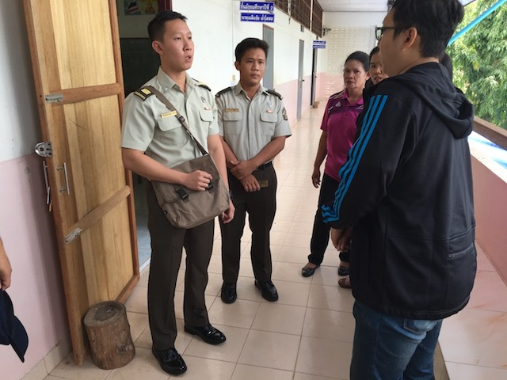

Training and Preparation
As part of your initial training with the interpreter, you need to convey that the you (or other military members) will always be directing the interview. Put the interpreter's role in proper perspective. Stress the interpreter's importance as a vital communication link between the military member and the target audience. Appeal to the interpreter's professional pride by clearly describing how the quality and quantity of the information sent and received is directly dependent upon their interpreting skills. Also, mention how they function solely as a conduit between the US military and the subject.
Be aware that some interpreters, because of cultural differences, may attempt to "save face" by purposely concealing their lack of understanding or knowledge on a topic. They may attempt to translate what they think you said or meant without asking for clarification. This can result in disinformation and confusion, and impact credibility. Let the interpreter know that when in doubt they should always ask for clarification. Create a safe environment for this as early in the relationship as possible.
Another pitfall that interpreters often fall into is providing you information instead of asking the question to the target. For example, you might ask a soldier what his rank is. Instead of asking, the interpreter might just tell you, "Colonel". You need to force him ask, so that you get it directly from the target. Explain to your terp this isn't a judgment on his knowledge, but his role.
A useful technique for training an interpreter is to engage non-critical host nationals prior to your first key engagement. Here are some ideas.
Roll over the grey over on each image for possible conversation topics that you can use to build a conversation and test/train your interpreter
Food vendors
What kinds of foods do they serve? Where do their ingredients come from? How long have they ran their business? Are these local foods? How do they prepare the food?
Avoid questions could seem challenging. For example, questions about about quality or freshness.
Training Tip: It is often difficult for interpreters to resist answering the questions themselves, especially if they are from that region. This is good opportunity to
"force" them to interpret what you're asking, not provide the information you're looking for.
Shopkeepers
What types of goods to they sell (if it is not too obvious)? Where do they get their supplies from? How long have they ran their business? When are they the most busy? Ask about prices, even on things that are labeled.
Try to avoid questions that could potentially have negative answers e.g. about their competition or if their business is going well. Let them know you're wanting a conversation, not necessarily to buy something.
Training Tip:Stores are great places to test vocabulary, especially more technical places like office supplies, equipment or machinery.
HN Soldiers and Security Guards

What rank are they? Ask to explain what other ranks look like. What kind of equipment do they have? Where are they originally from? How long have they served?
Don't ask questions that sounds like you're gathering intelligence. Detailed unit structures, recent operations and readiness are topics that should be avoided.
Training Tip:Soldiers represent a great opportunity to familiarize your interpreters with military concepts like rank, unit types and terminology. Don't assume that just because your terps are working with you that they know and understand their own militaries. If they have important gaps (like not being able to translate ranks) you need to get that fixed ASAP.
Click here for the next section